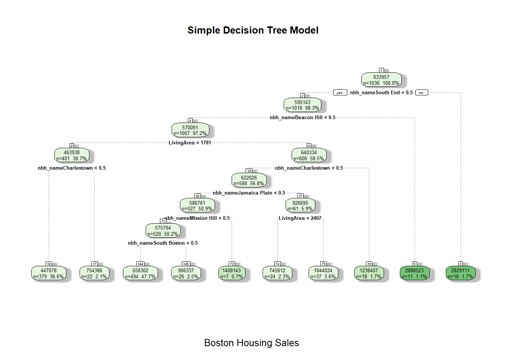
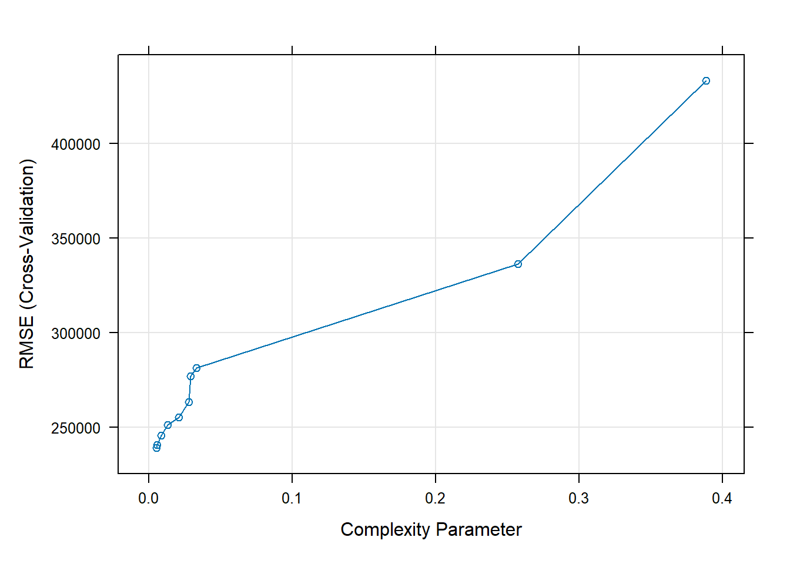
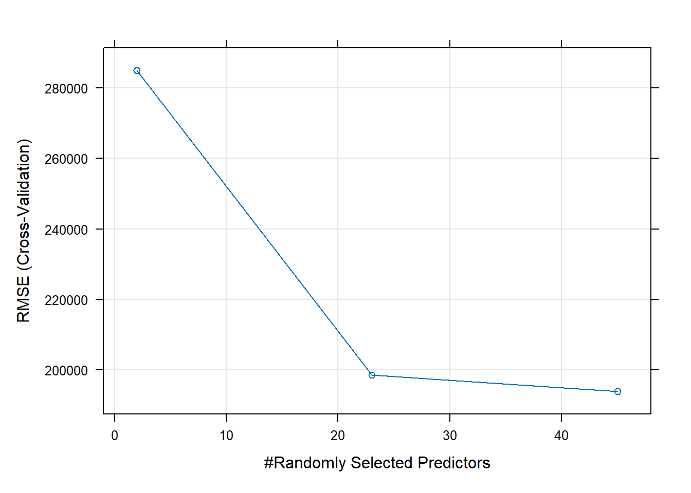

library(tidyverse)
library(sf)
library(caret)
library(rattle) # this is for generating plots of tree structuresTree-Based Models and Hyperparameter Tuning with 
11.118/11.218 Applied Data Science for Cities
Introduction
Last week, we explored how different machine learning models follow different learning rules and, as a result, achieve varying levels of predictive accuracy.
This week, we’ll see that even when using the same type of model, we can continue refining it through techniques such as hyperparameter tuning to enhance performance while striking a balance between accuracy and generalizability. Tree-based models are great examples of this process.
The example we’ll work on this week builds on Chapter 4 from Public Policy Analytics. The author first made a point that housing prices depend not only on property characteristics but also on spatial factors (i.e., where they are). Therefore the dataset for today’s tutorial includes an additional feature: the neighborhood name (as suggested in the book chapter), allowing us to account for location effects in our model.
boston <- read_csv("data/boston_house_price_neighborhood.csv")Fit a Decision Tree Model
Here we repeat the modeling workflow from last time. After the same process of cleaning the data, we split it into training and test sets to prepare for modeling.
modeldata <- boston |>
select(-c(Parcel_No, PricePerSq, GROSS_AREA, R_TOTAL_RM,
R_BLDG_STY, OWN_OCC)) |>
filter(Style != "Unknown") set.seed(24)
train_index <- createDataPartition(
y = modeldata$SalePrice,
p = .7,
list = FALSE
)
train_data <- modeldata[ train_index,]
test_data <- modeldata[-train_index,]In caret package, we fit different models by changing the method argument in train(). Here, we fit a basic decision tree model by setting method = "rpart".
tree_model <- train(
SalePrice ~ .,
data = train_data,
method = "rpart",
trControl = trainControl("cv", number = 5),
tuneLength = 10
)Decision Tree structure
A simple decision tree model is considered a “white-box” model, because we can easily see the if-then-else rules it uses to make predictions. At each split, the tree decides which variable to use and what value is appropriate for the split. Each path leads to a smaller group that is more homogeneous in terms of housing price.
In the following plot, each node shows three numbers: the predicted value of this group, % of total data, and number of observations. For instance, at #2 node:
- 595,143 is the average of the housing price variable in this group,
- n=1018 is the number of observations that fall in this group, and
- 98.3% means this number of observations takes up 98.3% of the entire dataset.
fancyRpartPlot(
tree_model$finalModel,
main = "Simple Decision Tree Model",
sub = "Boston Housing Sales",
digits = -3
)
Note: Tree-based models implicitly perform variable selection. They identify and use the most important variables for splitting the data at each step. Variable importance is measured by how much a variable reduces error when used to create splits.
Note: You can see that several splits occur by neighborhood name, which suggests that location, particularly areas like South End and Beacon Hill, contributes the most to explaining differences in housing prices.
How big the tree should grow: Hyperparameter cp
A decision tree can technically keep growing until each leaf is pure (i.e., contains only one data point). However, as the tree grows deeper, its splitting rules become increasingly specific. Initially, the splits capture meaningful patterns in the data, but later ones often reflect only noise. This leads to overfitting. To prevent this, we need to decide when to stop growing the tree.
The tree model includes an internal complexity parameter (cp), which serves as a comprehensive measure capturing the influence of tree depth, number of splits, and the overall size of the tree. In essence, cp determines how strongly the model is penalized for adding additional branches, helping to prevent overfitting.
- A higher cp means more restriction (fewer splits, simpler tree).
- A lower cp allows more splits (risking overfitting).
You can specify a fixed cp value directly in the train() function, although this is not typically done, because we usually don’t know the optimal value in advance.
model <- train(
...
tuneGrid = data.frame(cp = 0.01)
)Instead, we tune cp, that is, trying out multiple values to find the one that provides the best balance between model accuracy and generalizability.
Cross validation
When we were building our tree_model in previous code, we have used these two lines to say:
- Use 5-fold cross-validation to estimate the performance
- Try 10 different
cpvalues for each fold
model <- train(
...
trControl = trainControl("cv", number = 5),
tuneLength = 10
)Then if we print out the trained model below, we’ll see that these settings are reflected in the output. It reports that the model performed 5 folds of cross-validation, tested 10 cp values in each, and displays the average performance (e.g., RMSE) for each cp value across the folds.
A 5-fold (or in general, k-fold) cross validation means we take a portion of the training data for “testing”, so that we can see which hyperparameters generate better “test” performance without touching the actual test data. Then repeat this for k times to stabilize the results.
After this 5-fold validation process, it reports: “The final value used for the model was cp = xxx”.
tree_modelCART
1036 samples
12 predictor
No pre-processing
Resampling: Cross-Validated (5 fold)
Summary of sample sizes: 829, 830, 827, 829, 829
Resampling results across tuning parameters:
cp RMSE Rsquared MAE
0.005487841 238894.0 0.7505724 140452.8
0.005696664 240504.4 0.7456855 141086.3
0.008640778 245515.5 0.7349133 146244.4
0.013165261 251031.5 0.7234123 150601.4
0.021061126 255112.4 0.7150999 155189.5
0.027799549 263279.0 0.6943999 162524.5
0.029198558 276896.1 0.6638722 174046.4
0.033041133 281381.4 0.6492810 178333.7
0.257364641 336394.9 0.4886443 195804.9
0.388418956 433537.0 0.3191060 232220.2
RMSE was used to select the optimal model using the smallest value.
The final value used for the model was cp = 0.005487841.The plot(tree_model) displays the model performance for each value of cp.
plot(tree_model)
Evaluate the best tree model on test data
Validations helps us choose the best hyperparameter values. Then we can move on to apply the trained model to the test data and calculate the test RMSE. This value represents the performance of the best tree model we were able to build, based on our training and tuning process.
pred <- predict(tree_model, newdata = test_data)
tree_result = RMSE(pred, test_data$SalePrice)
tree_result[1] 245891.9Recall that this week we added a neighborhood name variable to the dataset, which wasn’t included in last week’s version. With this addition, even a simple decision tree achieved better predictions than last week’s random forest model ($276.192), simply by accounting for some spatial information.
Fit a Random Forest Model
A random forest is an ensemble model (i.e., using many small models) that combines the predictions of many individual, slightly different decision trees. Each tree makes its own prediction, and the final result is based on averaging their results.
Why doing this? A single decision tree makes hard, deterministic splits, but if many trees split at slightly different places, the combined decisions become smoother and more robust. For example, instead of a sudden jump in predicted price from $2M to $3M for a small difference in living area, the ensemble produces a gradual and more realistic transition.
Train a random forest model by using method = "rf".
set.seed(42)
rf_model <- train(
SalePrice ~ .,
data = train_data,
method = "rf",
trControl = trainControl("cv", number = 5),
tuneLength = 3
)
pred <- predict(rf_model, newdata = test_data)
rf_result <- RMSE(pred, test_data$SalePrice)
rf_result[1] 194364.5We can see that the random forest produces a better-performing model than a single decision tree. With the inclusion of the spatial variable, its performance also improves compared with last week’s results.
How was the forest formed
Random forest mimics “the wisdom of crowds”: each tree is trained on a slightly different version of the training data. It intentionally creates some randomness and diversity so that the model generalizes better.
- Each tree is trained on a bootstrapped sample of the original data
- Bootstrap means sampling with replacement, which allows the same observation to be selected multiple times in a sample. The term comes from the phrase “to pull oneself up by one’s bootstraps,” meaning that we can create many new datasets from the original data itself by repeatedly resampling, without collecting any new data.
- In additional to using different observations, each tree also considers only a random subset of predictors instead of all available ones.
- This is controlled by its hyperparameter
mtry
- This is controlled by its hyperparameter
How many trees are used in a forest
ntree controls the number of trees in a random forest model. It is not tuned, because adding trees mainly increases run time, not accuracy. The default value is 500. If you want the model to run faster, you can just change it to a smaller value.
train(
...
ntree = 500
)How many features each tree used: Hyperparameter mtry
mtry controls the number of predictors randomly selected and used in a tree.
- Smaller
mtry→ Each tree sees fewer variables (increases diversity among trees, reduces overfitting) - Larger
mtry→ Each tree sees similar variables (increase accuracy, but trees becomes more similar, increases overfitting)
When we were building our rf_model in previous code, we have specified trControl = trainControl("cv", number = 5), and tuneLength = 3.
So if we print out the trained model, we’ll see that these settings are reflected in the output. It reports that the model performed 5 cross-validations, tested 3 cp values in each, and displays the average performance (e.g., RMSE) for each mtry value across the folds.
After this 5-fold validation process, it reports: “The final value used for the model was mtry = xxx”.
rf_modelRandom Forest
1036 samples
12 predictor
No pre-processing
Resampling: Cross-Validated (5 fold)
Summary of sample sizes: 829, 828, 830, 830, 827
Resampling results across tuning parameters:
mtry RMSE Rsquared MAE
2 279536.2 0.7916184 158033.6
23 193727.8 0.8413059 108460.5
45 190911.5 0.8395604 108220.2
RMSE was used to select the optimal model using the smallest value.
The final value used for the model was mtry = 45.Similarly, you can plot the model performance for each value of mtry.
plot(rf_model)
Model Summary
We made two key changes on our model this week. First, we added a neighborhood name variable to capture spatial differences in housing prices. This led to a big improvement in model performance. Second, we applied 5-fold cross-validation and experimented with hyperparameter tuning. This usually only bring a modest gain in predictive accuracy, but its main value was in stabilizing the model and, more importantly, helping us better understand how these models work.
| Model Type | RMSE |
|---|---|
| Random Forest (last week, without location variable) | 276,192.4 |
| Decision Tree (with location variable) | 245,891.9 |
| Random Forest (with location variable) | 194,364.5 |
The caret package supports over 230 machine learning algorithms. Each model comes with its own set of hyperparameters that need to be tuned. This table shows all the models available in train(), along with their tunable hyperparameters.
Lab Report
For this homework, please continue working with the Ames Housing dataset and improve the best model you built previously by adding spatial contexts and applying tree-based models.
Reuse the cleaned dataset that you used for modeling last time, but if you haven’t already, include the “Neighborhood” variable from the original dataset.
You’ll build two models: a Decision Tree and a Random Forest.
For each model, try two approaches:- Use the model’s default settings (no
trControlandtuneLengtharguments).- Note: the model will still perform automatic tuning using its default method and a smaller range of tuning values. If you print the model results (e.g., type: model_name), you can see the resampling process it used and the parameter values it selected by default.
- Set up cross-validation (e.g., 5-fold CV) and specify a
tuneLengthvalue for hyperparameter tuning. You can try different values oftuneLength, but note that random forests tend to run slowly if you give it a big number.
- Use the model’s default settings (no
In total, you’ll have four models (two per method). Next, summarize the hyperparameters used and their corresponding test RMSE values as your results. Include any additional notes that document your process, key decisions and findings.
Please prepare your report in a Quarto document and submit your Rendered HTML file to Canvas by 9am, Wednesday, Nov 19.